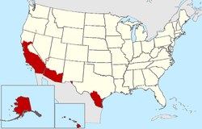

美国联邦政府 (2009年至今)
维基百科，自由的百科全书
| 本条目记述一项正在发生的事件。随着事件的进展，相关信息可能会迅速变化，最初的新闻报道可能并不可靠。 |
| 美国联邦政府 | |
国旗 | |
 联邦政府实际控制区（红色），2009年11月 | |
| 格言 | “我们信仰上帝”（In God We Trust） |
|---|---|
| 首都 | 华盛顿哥伦比亚特区（法理上；现由基列共和国占据） 萨克拉门托（临时） |
| 最大城市 | 洛杉矶 |
| 政体 | 联邦制总统制共和国（紧急状态下） |
| 代理总统 | 雷蒙德·E·卡洛韦 |
| 立法机构 | 临时国会（萨克拉门托） |
| 沿革 | |
| - 总统日屠杀 | 2009年2月16日 |
| - 代理总统宣誓就职 | 2009年2月16日 |
| - 迁都萨克拉门托 | 2009年3月 |
| - 临时国会召开 | 2009年5月 |
| 面积 | |
| - 估计 | 约2,019,000平方公里（779,600平方英里）（实际控制区，含阿拉斯加，估计） |
| 人口 | |
| - 估计 | 约4,990万（危机前人口普查局对所控各县的估计） |
| 货币 | 美元 |
| 时区 | 太平洋、山地、中部、阿拉斯加、夏威夷－阿留申 |
| 国际电话区号 | +1 |
美国联邦政府，总统日屠杀之后在新闻报道中常被称为“萨克拉门托政府”（Sacramento government），是自称美利坚合众国唯一合法政府的宪政机构。2009年2月16日，总统在白宫遇害，副总统、众议院议长和参议院临时议长在国会联席会议遇袭时身亡。当晚，作为指定幸存者的司法部长雷蒙德·E·卡洛韦（Raymond E. Calloway）依据《1947年总统继任法》在一处未公开地点宣誓就任代理总统。3月上旬，政府迁往加利福尼亚州萨克拉门托。
截至2009年11月，联邦政府控制加利福尼亚州大部、亚利桑那州中南部、通往拉斯维加斯的走廊、阿拉斯加州、夏威夷州、得克萨斯州南部的纽埃西斯地带（Nueces Strip），以及被围困的埃尔帕索（布利斯堡）飞地。加拿大、欧洲联盟各成员国、日本、澳大利亚等多数国家承认其为美国合法政府，其仍保有美国在联合国安全理事会的席位。[6]
目录[隐藏] |
[编辑]继任经过
[编辑]2月16日
当晚的国会联席会议原定于美东时间21时听取总统关于“全国生育紧急状态”的演说。约20时40分，总统在白宫西翼准备前往国会时，一枚炸弹爆炸，总统当场死亡。[1]几分钟后，身穿国会警察制服的枪手闯入众议院会场，副总统、众议院议长和参议院临时议长都在遇难者之中。官方将袭击归咎于“伊斯兰狂热分子”，但这一说法至今未获证实。[来源请求]
按照惯例，联席会议期间会有一名内阁成员留在华盛顿以外。当晚留守的是司法部长卡洛韦，他被送往一处政府至今未公布的地点，有报道称是弗吉尼亚州的韦瑟山（Mount Weather）或内布拉斯加州的奥弗特空军基地。[2]继任顺位在司法部长之前的国务卿、财政部长和国防部长当时都在会场内，或遇难或失踪。卡洛韦于美东时间约23时10分由一名联邦地区法官主持宣誓。宣誓过程没有公开录像。
[编辑]与华盛顿军方决裂
2月17日，国家首都地区的陆军指挥部宣布全国紧急状态，“暂时中止”宪法，并表示不承认卡洛韦的继任。代理总统办公室称该宣布“没有任何宪法依据”。此后数周，美国太平洋司令部和海军陆战队第一远征军等密西西比河以西的大部分司令部表示听从代理总统指挥，东海岸的司令部则大多没有表态。[3]
4月，华盛顿的雅各之子临时政府宣布成立基列共和国，分裂由此成为定局。
[编辑]迁都萨克拉门托
政府于2009年3月上旬迁出原避难地点。据《萨克拉门托蜜蜂报》报道，萨克拉门托胜过圣地亚哥和丹佛，原因是现成的州政府建筑、约45英里外的特拉维斯空军基地，以及州长主动提供加利福尼亚州议会大厦。[4]代理总统办公室设在州议会大厦东侧附楼，官邸设在北海兰兹（North Highlands）的前麦克莱伦空军基地。
[编辑]控制区域
联邦政府的控制区由五个互不相连的部分组成。下表人口为人口普查局2008年7月1日的估计数，即危机前数字。[7]
| 区域 | 行政中心 | 人口（2008年估计） |
|---|---|---|
| 西部本土 | 萨克拉门托 | 约4,710万 |
| 阿拉斯加司令部军区 | 埃尔门多夫空军基地（安克雷奇） | 686,293 |
| 夏威夷太平洋司令部领地 | 史密斯营（瓦胡岛） | 1,288,198 |
| 南得克萨斯联邦保护区 | 科珀斯克里斯蒂海军航空站 | 约170万 |
| 布利斯堡联邦飞地 | 布利斯堡 | 742,062 |
西部本土北起2009年6月与杰斐逊州签订的红崖协议所定的比尤特县－萨特县一线，南至圣地亚哥和诺加利斯的墨西哥边界。沿15号州际公路的走廊通往拉斯维加斯和圣乔治，曾多次被切断。金曼位于66号公路以东，在联邦控制线之外。
阿拉斯加自2009年3月起由军方管理，由安克雷奇的埃尔门多夫空军基地和相邻的理查森堡共同负责。跨阿拉斯加输油管道仍在运行。[8]夏威夷的州长与州议会仍在檀香山办公，但民防、港口和空中交通自4月起交由史密斯营的太平洋司令部管理。[来源请求]
南得克萨斯保护区包括纽埃西斯河以南各县，于2009年5月成立。埃尔帕索自6月起三面被墨西哥占领区包围，只能靠比格斯陆军机场空运维持。
[编辑]政府与政治
卡洛韦至今没有提名副总统。根据第二十五修正案，提名须经两院确认，而政府表示在临时国会的地位确定之前不会提名。[5]内阁由各部幸存的副部长代理。
两院议员在2月16日大多遇难。2009年5月，西部各州的幸存议员与依州法任命的参议员在萨克拉门托纪念礼堂组成临时国会。其是否达到法定人数、能否合法立法，法学界仍有争议。[5]
政府依据《国家紧急状态法》行事，洛杉矶、奥克兰和凤凰城实行夜间宵禁。2009年9月，联邦通信委员会发布第09-4A号紧急指令，要求搜索引擎暂停索引部分内容，美国公民自由联盟已提起诉讼。
[编辑]军事
政府保有美国太平洋舰队大部、彭德尔顿营的海军陆战队第一远征军，以及加州和亚利桑那州国民警卫队。
[编辑]核爆炸
2009年北美共发生五次核爆炸。8月的四次分别位于旧金山湾北岸的康科德海军武器站和马雷岛海军船厂、金曼，以及奥兰治县的前埃尔托罗海军陆战队航空站。其中康科德、马雷岛和埃尔托罗位于联邦控制区内，特拉维斯空军基地严重受损。
第五次发生在11月4日中部时间15时41分，地点在孟菲斯以北约15英里的米林顿附近，靠近中南部海军支援基地（NSA Mid-South），当量估计为1万至1.5万吨。30英里内居民被要求就地避难，田纳西州、阿肯色州和密西西比州宣布紧急状态。[9]米林顿不在联邦控制区内。爆炸后不到一小时，卡洛韦在州议会大厦对记者说，联邦调查人员“已经抵达田纳西”，并称“我们会找出是谁干的”。[10]
至今没有任何组织对五次爆炸作出可信的认领。
[编辑]经济
| 此章节需要扩充。您可以通过编辑来帮助扩充此章节。 |
旧金山联邦储备银行自3月起代行中央银行职能。
[编辑]对外关系
 加拿大：3月12日承认萨克拉门托政府，并向难民开放边境。[6]
加拿大：3月12日承认萨克拉门托政府，并向难民开放边境。[6] 欧洲联盟：各成员国普遍承认萨克拉门托政府。
欧洲联盟：各成员国普遍承认萨克拉门托政府。- 墨西哥：维持外交关系，但因墨西哥占领区和布利斯堡之围关系紧张。
 基列共和国：互不承认，事实上处于战争状态。
基列共和国：互不承认，事实上处于战争状态。
[编辑]参见
[编辑]参考资料
- ^ "Bomb at White House kills President". 美联社. 2009-02-17. （英文）
- ^ Halvorsen, Mark. "How the line of succession ran out". 《洛杉矶时报》. 2009-02-22. （英文）
- ^ "Pacific commands back Calloway". 路透社. 2009-02-24. （英文）
- ^ "Federal government sets up in state Capitol". 《萨克拉门托蜜蜂报》. 2009-03-04. （英文）
- ^ Whitcomb, Ellen. "Can an Interim Congress make law?". SCOTUSblog. 2009-06-14. （英文）
- ^ "Canada, EU recognise Sacramento government". 路透社. 2009-03-12. （英文）
- ^ "Annual Estimates of the Resident Population for Counties: April 1, 2000 to July 1, 2008" (CO-EST2008-01). 美国人口普查局. 2009-03. （英文）
- ^ "Pipeline keeps flowing as Alaska comes under military rule". 《安克雷奇每日新闻》. 2009-03-21. （英文）
- ^ "Nuclear blast near Memphis". CNN. 2009-11-04. （英文）
- ^ "Calloway: 'We will find who did this'". CNN. 2009-11-04. （英文）